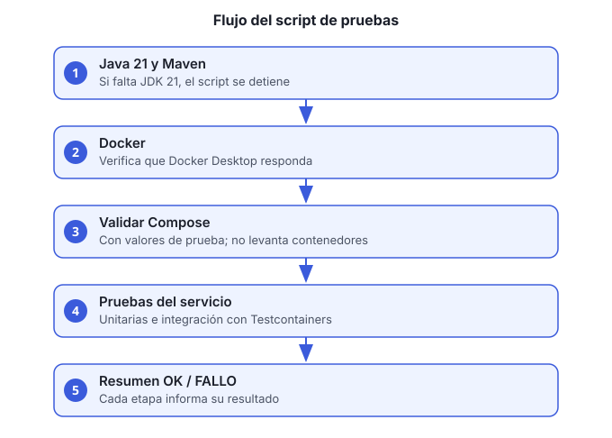

Objetivo: correr las pruebas unitarias y de integración de un servicio con un solo comando, y obtener un resumen de OK o FALLO.

macOS con Docker Desktop abierto. Los scripts
ejecutar-pruebas-<servicio>.sh están pensados para
Mac.
JDK 21. Si no lo tienes:
brew install --cask temurin@21
brew install mavenRepositorio clonado. Los scripts se ejecutan desde la raíz.
| Script | Servicio |
|---|---|
ejecutar-pruebas-usuarios.sh |
usuarios-accesos-ms |
ejecutar-pruebas-clientes.sh |
clientes-ms |
ejecutar-pruebas-facturacion.sh |
facturacion-pagos-ms |
ejecutar-pruebas-contabilidad.sh |
contabilidad-ms |
ejecutar-pruebas-inventario.sh |
inventario-operaciones-ms |
ejecutar-pruebas-compras.sh |
compras-proveedores-ms |
ejecutar-pruebas-pedidos.sh |
pedidos-ventas-ms |
ejecutar-pruebas-documentos.sh |
documentos-cumplimiento-ms |
ejecutar-pruebas-reportes.sh |
reportes-ejecutivos-ms |
ejecutar-pruebas-nexus.sh |
nexus-ms |
ejecutar-pruebas.sh |
Script general del repositorio |
Verifica Docker (opcional, pero evita esperas):
bash verificar-docker.shDale permiso de ejecución a los scripts (solo la primera vez, o si los copiaste de otra máquina):
chmod +x ejecutar-pruebas*.shEjecuta el script del servicio:
bash ejecutar-pruebas-usuarios.shEspera el resumen. El script corre estas etapas
en orden. Cada una imprime OK: o FALLO::
Revisa los detalles de un fallo en la salida de
Maven: el script no los repite. Los reportes de cobertura quedan en
NOMBRE-ms/target/site/jacoco/index.html cuando el build los
genera.
El resumen final indica cuántas etapas pasaron y cuántas fallaron.
Una corrida correcta termina sin fallos. La cobertura y el estilo
(JaCoCo, Checkstyle, PMD, SpotBugs) están en modo reporte: no cortan el
build, así que revisa sus reportes si quieres detalles (ver la sección 2
de pendientes/pendientes-documentacion.md).
| Síntoma | Qué hacer |
|---|---|
No encuentro JDK 21 |
Instala Temurin 21 y vuelve a ejecutar |
Docker responde en FALLO |
Abre Docker Desktop y espera a que el icono indique que está listo |
| Testcontainers no conecta | Revisa que Docker tenga memoria suficiente (8 GB recomendado) |
| Falla solo la etapa de Compose | Revisa que el servicio tenga su docker-compose.yml y
que las variables de prueba coincidan con las requeridas |
Si necesitas ayuda con la salida, pega el resumen completo, no solo la línea de error.